У каждой позиции здесь один ценник — в рублях, без надбавок
и мелкого шрифта. Под ним стоит та же сумма в валюте твоей страны: играют
не только из России, и строка «199 ₽» человеку из Алматы ничего не говорит.Золотой червонец — валюта самого сервера: его зарабатывают
игрой и тратят в игре, на землю, налоги и торговлю между державами. Купить
его тоже можно, отдельной позицией, но ни один товар
здесь в червонцах не стоит. Остальное в лавке — то, что не решает на фронте:
звания, косметика, снаряжение и вечер, сэкономленный у станка.
Оплата пока закрыта — день открытия
объявим в Discord и Telegram. Пока это витрина: ценников на ней нет, оплата
не принимается.Покупки приходят на почту
сервера: в игре придёт письмо, забрать — командой /mail. Если ты ещё
не заходил на сервер, письмо дождётся первого входа.
Как устроены цены
Один ценник и никаких курсов
Цена стоит в рублях — ровно та, которую спишет банк. Ниже мелко
идёт та же сумма в валюте твоей страны: пересчёт справочный, по курсу ЦБ РФ
на указанный день. Никаких внутренних «курсов лавки», пакетов валюты и сгорающего
баланса: платишь за ту позицию, которую взял, и ни за что больше.
Пока без цен
Витрина без ценников
Лавка на перерыве между вайпами: покупки приходят почтой
в игре, а сервер до следующего вайпа выключен. Поэтому прием денег выключен,
и ценники с витрины сняты. Остальное на месте — позиции, состав наборов, шансы кейсов
и награды пропуска видно целиком. Цены вернутся вместе с оплатой: одной строкой
в рублях и пересчётом в валюту твоей страны.
Скидка на заказ
Промокоды
Код вводится в окне заказа — скидка считается там же, и к оплате выходит
уже уменьшенная сумма. Коды не сгорают до указанной даты и не привязаны
к первой покупке.
ивенты, турниры и конкурсы в каналах проекта
праздничные — к открытию сезона, к Новому году, к юбилеям сервера
приветственные — для тех, кто пришёл с чужого стрима или ролика
извинительные — за простой, откат мира или сорванный ивент, всем задетым
ввод в окне оплаты · поле «промокод»
Постоянная скидка
Премиум — −5% на всю лавку
Пока действует «Мандат Ставки», каждый заказ идёт со скидкой 5% —
на объём до 5000 ₽ в месяц. Дальше по обычной цене.
складывается с промокодом — сначала промокод, потом −5% премиума
считается автоматически, включать ничего не надо
лимит считается по календарному месяцу и обнуляется первого числа
комбо «Держава» с кодом −10% и мандатом — 1103 ₽ вместо 1290
Ценников в червонцах здесь нет. Золотой червонец —
валюта самого сервера: его дают за игру, за пропуск и за ивенты, а тратят в игре —
на свою провинцию, суточный налог и торговлю между державами. Товары лавки стоят
только рубли, ни один ценник на этой странице в червонцах не набран. Сами червонцы
при этом купить можно — отдельным пакетом, от 50 Ч, и обратно
на деньги они не меняются. Что игра выдаёт сама и сколько — в разделе
«Без единого рубля».
Без покупки
Просто поддержать
Проект стоит денег каждый месяц: сервер, домен, бот, бэкапы.
Если хочется помочь, а из лавки ничего не нужно — вот прямой путь.
Сумма любая, от 10 ₽, и взамен не выдаётся ничего: ни привилегии,
ни предметов, ни места в очереди.
Приём денег сейчас закрыт — ни суммы, ни кнопки.
Раздел включится вместе с лавкой; до тех пор проекту от вас ничего не нужно,
кроме игроков на сервере.
₽
100 ₽
Списывается рублёвая сумма. Минимум — 10 ₽.
Валюта сервера
Золотые червонцы
Червонец зарабатывается игрой — вечер у скупщика даёт 90–130 Ч,
и весь сервер на этом стоит. Но если времени нет, а провинцию надо держать
или на рынке ждёт чужой лот, червонцы можно просто докупить.
Минимум — 50 Ч, дальше — сколько нужно: готовый пакет или своё число
в поле под пакетами. Чем больше берёшь, тем дешевле выходит червонец.
50 червонцев
полвечера игры · 1,98 ₽ за червонец
99 ₽
150 червонцев
вечер с небольшим · 1,79 ₽ за червонец
269 ₽
400 червонцев
три-четыре вечера · 1,62 ₽ за червонец
649 ₽
1000 червонцев
полторы недели ровной игры · 1,49 ₽ за червонец
1490 ₽
Ч
99 ₽
От 50 до 2000 Ч за раз. Цена считается по ступеням пакетов выше.
Что с ними можно и чего нельзя.
Купленные червонцы падают на твой счёт в игре и ничем не отличаются от
заработанных: ими берут провинцию, платят суточный налог, выкупают лоты
у других игроков и скидываются городу в казну. Чего нельзя: обратно
на деньги червонец не меняется — ни вывода, ни выкупа, ни продажи за
реальные деньги на стороне; за такую продажу снимают покупки и банят.
Ценников в червонцах в лавке по-прежнему нет: всё остальное здесь стоит
только рубли. И больше 2000 Ч в сутки на один аккаунт лавка не
отпускает — потолок стоит ровно затем, чтобы карту сезона нельзя было
скупить деньгами за один вечер.
Звания
Привилегии на месяц или на весь вайп
Семь ступеней. У каждой свой кит через /kit
и свои команды; старшая ступень включает команды и киты всех младших. Ниже по каждой
карточке — ровно то, что звание делает в игре сегодня.
Действует до следующего вайпа и сгорает вместе
с ним. Основной вариант: вайп идёт около трёх месяцев.
/fly над своим городом — гаснет на границе и в бою
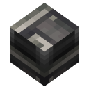
Позывной — весь сервер слышит сигнал, когда ты заходишь (раз в 10 минут)
Высшие ступени
Команды — как у «Маршала», сверху самые тяжёлые киты сервера.
V
Ступень V
Генералиссимус
Промышленный ящик: алюминий, нефть и стальные механизмы.
990 ₽/ весь вайп
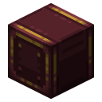
Кит «Ставка генералиссимуса»раз в пять суток · стальной механизм ×8, алюминий ×128, нефть ×8 вёдер
Всё из «Маршала» и его кит
4 точки дома — максимум на сервере
/канонада — звук орудийных залпов вокруг тебя, раз в 10 минут
Своя нашивка у ника — «ГС», бордовая
VI
Ступень VI
Верховный
Самый тяжёлый склад после легендарного: сталь блоками и снаряды.
1590 ₽/ весь вайп
Кит «Резерв Верховного»раз в шесть суток · стальной блок ×32, механизм точности ×16, снаряды ×32
Всё из «Генералиссимуса» и его кит
Своя нашивка у ника — «В», графитовая
VII
Ступень VII
Легенда
Раз в неделю — всё на пушку целиком, сталь и нефть.
2490 ₽/ весь вайп
Кит «Легендарный резерв»раз в неделю · стволы, затвор и лафет пушки, заряды, снаряды, сталь ×256, нефть ×16 вёдер
Всё из «Верховного» и его кит
Своя нашивка у ника — «Л», малиновая
Киты званий — чем выше ступень, тем полнее ящик и тем реже он приходит
Кит приходит по команде /kit — у каждого звания свой ящик
и свой срок. Старшая ступень берёт у младших и команды, и их ящики: в /kit
у неё кнопка «забрать» у каждого ящика.
Паёк знаменосца
раз в сутки · «Знаменосец»
провиант ×64
факелы ×128, уголь ×64
железный инструмент
Гвардейский запас
раз в двое суток · «Гвардеец»
андезитовый сплав ×128
сундуки ×8
зелье лечения ×4
Командорский запас
раз в трое суток · «Командор»
латунь ×128, механизм точности ×4
пороховой заряд ×16
золотое яблоко ×2
Маршальский резерв
раз в четверо суток · «Маршал»
сталь ×128, коксовый уголь ×128
механизм точности ×8
фугасы ×16
Ставка генералиссимуса
раз в пять суток · «Генералиссимус»
стальной механизм ×8
алюминий ×128
нефть ×8 вёдер
Резерв Верховного
раз в шесть суток · «Верховный»
стальной блок ×32
механизм точности ×16
фугасы ×16, бронебойные ×16
Легендарный резерв
раз в неделю · «Легенда»
материалы на пушку целиком
заряды ×32, фугасы ×8
сталь ×256, нефть ×16 вёдер
Чего за деньги нет: креатива, бессмертия,
админ-прав, чужих координат и личных бустов добычи. Звание экономит время
и даёт удобства, а войну решают заводы и пушки.
Премиум-подписка
Мандат Ставки
Месячная подписка поверх звания. Она даёт одно — скидку на всю лавку,
и эта скидка работает с первой минуты после оплаты.
Подписка · 30 дней
Мандат Ставки
199 ₽/ месяц
без автопродления — подписка просто заканчивается
Работает с первого дня
−5% на всю лавкудо 5000 ₽ в месяц, поверх промокода
Скидка считается сама, в окне заказа — включать ничего не надо
Складывается с любым званием: у них разные наборы, ничего не теряется
Как работает
Включается сразу после оплаты — письма на /mail не будет, скидка живёт в самой лавке
30 дней с минуты оплаты; вторая оплата продлевает срок, а не сгорает
Без автопродления — подписка просто заканчивается
Как считается скидка: сначала промокод, затем −5% мандата.
Лимит 5000 ₽ считается по календарному месяцу. Кроме скидки мандат ничего не даёт —
ни предметов, ни преимуществ в игре.
Боевой пропуск · позже
Пропуск сезона
Пропуска в игре пока нет. Ниже — как он задуман; ордер, ротации
и пропуски этапов не продаются, пока он не заработает.
Награда стоит на каждом этапе — пустых уровней нет ни одного.
Этап — 1000 очков, четыре задания в день дают чуть больше двух этапов. Круг —
60 этапов, это примерно месяц спокойной игры; за сезон круг закрывается трижды,
и за второй с третьим положены отдельные супер-награды.
1000очков — один этап
4задания каждый день
60этапов в круге
3круга за сезон
Что даёт очки: четыре задания в день, всегда
250–300
Лёгкое ×2
Наловить рыбы, сварить сталь, проехать сотню блоков на поезде, сдать нефть
в общий бак.
500–700
Среднее ×1
Собрать механизм, отгрузить партию на завод, отстроить участок дороги,
выиграть стычку за вышку.
1000–1200
Сложное ×1
Закрыть производственную цепочку, взять точку, довезти состав через
чужую границу.
2200–2600
Супер-сложное
Прилетает активным — например, на каждый пятый день игры подряд. Одно такое
задание — это сразу два с половиной этапа.
Обычный день: 250 + 250 + 600 + 1100 ≈ 2200 очков — это два этапа
с хвостом.День с супер-заданием: около 4600 — четыре с половиной этапа.Круг из 60 этапов закрывается примерно за 27 дней, три круга — за сезон.
Прыгнуть к этапу:
Полоса листается вбок, все 60 этапов. Подсвеченные золотом столбцы —
юбилейные, каждый десятый: только там в платной линии лежат обычные лавочные
кейсы. Столбцы потемнее — каждый пятый: киты, косметика и червонцы. На остальных
этапах — ресурсы вагонами, кейс «Штабные очки» и ротации: мало, но никогда не пусто.
Инструменты, а не платный трек
Прокрут заданий
Задание не нравится — прокрути, придёт другое. Ротации можно докупить.
Прокрутить можно и то, что уже почти сделано. Прогресс сгорает, но новое
задание приходит сразу — и его очки тоже твои. Это не баг: кто следит за тем,
какие задания выпадают, честно выжимает из дня больше очков.
Ротация заданий ×319 ₽
Пропуск этапа ×335 ₽
Вторая линия наград
Боевой ордер
Платная линия поверх бесплатной: косметика круга, тематические кейсы, киты
II–III уровня и механизмы вагонами. Бесплатную линию не забирает и не гейтит —
всё, что есть у бесплатного игрока, остаётся на месте. Обычные лавочные кейсы
лежат только на юбилейных этапах.
169 ₽/ круг
Супер-награды за круг
I
Первый круг
Обычное прохождение: плащ, знамя и значок сезона, кейсы на юбилейных этапах.
II
Второй круг
Скин-накидка «Ветеран 1936» и анимированный значок — вне пропуска
не выдаются никогда. Плюс 250 Ч и кейс «Генштаб».
III
Третий круг
Титул «Легенда сезона» с личным цветом, плащ «Легенда» и место
отдельным блоком в титрах. Плюс 500 Ч и «Командор» на 30 дней.
Награды за круги косметические и статусные — на бой они не влияют,
зато переезжают в следующий сезон вместе с игроком.
Новый сезон — чистый лист. Из пропуска в следующий
сезон уезжают только червонцы и косметика: значки, плащи, знамёна, скины, титулы кругов.
Материалы, ресурсы и киты не переносятся — иначе вайп перестаёт быть равным стартом
для всех, а это главное, за что на AEGIS играют.
Трофеи
Кейсы военного времени
Нажми на кейс — внутри всё: содержимое, шансы по каждой ступени, цена
обратного выкупа. Крутится кейс только в игре, после покупки. Кейс берут ради
призов: ненужный продаётся обратно в игре за червонцы, но в среднем это
около трети того, что дал бы на ту же сумму пакет червонцев.
Правила, которые не меняются
Продажа приза
Не нужен — продай обратно прямо в окне открытия: червонцы уйдут на игровой
счёт. Цена выкупа написана у каждой позиции заранее, она не плавает. Червонцы
с продажи идут в дневной предел 2000 Ч вместе с пакетами.
Громко — только редкое
В общий чат объявляются лишь эпическое и легендарное: остальное видит лично
владелец, лента не спамится. Выкуп у них в разы выше, чем у обычного приза.
Несколько за раз
Покупка — по 1, 3, 5 или 10 кейсов одного вида. Приходят письмом, открываются
в игре по /кейсы, у каждого свой приз.
Гарантия и повторы
Если девять кейсов одного вида подряд не дали редкого, десятый обязательно
даст редкое или выше — какое именно, решают те же шансы. Ненужный приз
продаётся в игре за червонцы по цене из таблицы кейса.
Шансы фиксированы
Они не зависят от суммы платежей, времени суток и от того, кто открывает;
единственная поблажка — гарантия десятого, и она только в пользу игрока.
Выпадение решает сервер, а не сайт и не игра у тебя. Числа на этой странице —
те же, что в игре.
Ничего эксклюзивно-сильного
В кейсах только обычные предметы игры, киты и звания на срок — ни одной вещи,
которой не бывает у остальных игроков.
Снабжение
Тематические киты
Семь профессий, три уровня у каждой. Нажми на кит — откроется состав
с ценником по каждой позиции и выбор уровня. Уровень — это полнота комплекта:
внутри обычные предметы игры и её модов, кит экономит вечер у станка.
Сколько угодно раз. Лимита на число покупок нет: бери столько, сколько нужно —
хоть десять «Строителей» под большую стройку. Купленный кит приходит письмом на
/mail, после «забрать» ложится в /посылки — оттуда открывается
в любой момент. До 9 стопок падает прямо в инвентарь, больше — сундуками по 27;
нужны свободные ячейки. Киты званий — отдельно: их выдаёт /kit раз в
сутки у «Знаменосца» и реже у старших, раз в неделю у «Легенды».
«Штурмовик» — единственный кит с личным оружием и бронёй: обычные мечи, лук или
арбалет, щиты, доспех и зелья; на III уровне — с зачарованиями и двумя зачарованными
яблоками.
Свой мод
Арсенал AEGIS
Сирены, снаряды, оружие и склады из нашего собственного мода — их нет
ни в одной другой сборке Minecraft. Каждый набор здесь не россыпь предметов,
а рабочая система целиком: сирена приезжает вместе с радаром и приводом,
склад — с терминалом и кладовщиком, снаряды — со взрывателями и картузами.
Поставил, подключил, работает. И всё это крафтится в игре: набор экономит
производственную цепочку, а не открывает недоступное.
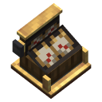
Набор I
Оповещение
Воздушная тревога, которая срабатывает сама — от радара, а не от кнопки.
Сирена воздушной тревоги ×4
Пост оповещения ×2
Проблесковый маяк ×8
Антенна радара: вращатель, рефлекторы, приёмник
Мотор, валы и шестерни на 256 SU
по отдельности — · выгода —
129 ₽
Сирена — кинетический блок Create: ей нужно 32 об/мин и работающий
радар Create Radar в радиусе 160 блоков. Привод и антенна в наборе есть, так что
воет она по настоящей воздушной цели. Пост раздаёт настройку всем сиренам в 64 блоках,
маяк мигает, пока сирена в тревоге или пришёл редстоун.
Набор II
Боекомплект
Пять наших снарядов к пушкам Big Cannons — и всё, чем их заряжают.
Осветительный снаряд ×8 — звезда на парашюте
Салютный снаряд ×8 — холостой, для парадов
Термитный снаряд ×8 — очаг пожара на 8 секунд
Контузионный снаряд ×8 — ударная волна без воронки
Газовый снаряд ×4 — облако по ветру, постройки целы
Взрыватели ударные и дистанционные ×24
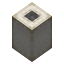
Пороховой картуз ×96
по отдельности — · выгода —
249 ₽
Калибр, взрыватель и заряжание — обычные, от Create: Big Cannons: снаряд
в казённик, следом картузы. Осветительному и салютному взрыватель не нужен, они вскрываются
в верхней точке сами; остальным трём — носовой, без него снаряд не сработает. Газовое
облако сносит ветром и на своих — это оружие площади, а не точки.
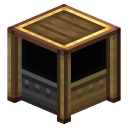
Набор III
Хранилище
Складская система под ключ: от сундуков до терминала, который сразу открывается.
Модуль крафта — ставится в «Модификатор» и не расходуется
Сборщик потоков ×2 и разветвитель потоков ×2
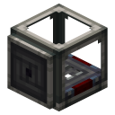
Упаковщик ×4 и складской передатчик ×4
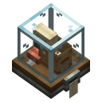
Складской тикер и горелка всполоха за кладовщика
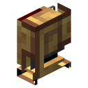
Ремни, воронки и рамки на подводку
по отдельности — · выгода —
269 ₽
Терминал склада Create открывается только у полной цепочки:
хранилища → упаковщик → складской передатчик → складской тикер, и рядом с тикером обязан
стоять кладовщик — существо или горелка всполоха. Здесь есть всё это разом, включая
горелку, поэтому интерфейс открывается в тот же вечер. Сборщик собирает три потока
в один, разветвитель — один в три.
Набор IV
Оружейная
Готовое стрелковое отделение: стволы, навеска, патроны и гранаты.
Винтовка обр. 1891/30 ×2
Пистолет-пулемёт ×2
Ручной пулемёт
Противотанковое ружьё
Барабанный и дисковый магазины ×2
Оптика, дульный тормоз, сошки и гранёный штык
Винтовочный патрон ×256
Бронебойный патрон ×64
Осколочная граната ×16 и связка гранат ×4
Дымовая шашка ×8
по отдельности — · выгода —
299 ₽
У каждого ствола есть ресурс: настреляв своё, он «садится» — разброс выше,
пробитие ниже, — и лечится только заменой ствола. Ни стволов, ни ствольных коробок,
ни штампов в наборе нет и не будет: производство остаётся производством, и через
несколько сотен выстрелов оружейная линия нужна всё равно. Это фора на старте,
а не преимущество навсегда. Как выглядят стволы и гранаты — покажем на открытии, поэтому вместо картинок пока замок: список и цена от этого не меняются.
Полный арсенал —
Все четыре набора мода одним заказом: сирены с радаром, боекомплект, складская
система и оружейная. Дешевле, чем брать наборы по одному, — и это единственная
скидка на товар мода, других не будет.
ОповещениеБоекомплектХранилищеОружейная
—
749 ₽
по отдельности —
Честная война: ни один предмет мода не продаётся
только за деньги — всё это крафтится на сервере из своей руды, нефти и стали, и любой
игрок делает то же самое сам. Набор экономит производственную цепочку, а не открывает
того, чего нет у остальных: боеприпас кончается, ствол садится, сирене нужен ток.
Деталей, из которых оружие собирается, здесь нет принципиально.
Снаряжение
Ранец и его модули
Первые три яруса собираются на верстаке, как в самом моде.
Старшие три — штабной, инженерный и экспедиционный — берутся только здесь:
их рецептов на сервере нет, из сундуков они не выпадают, с мобов не снимаются.
Модули к любому ранцу крафтят сами, из своих материалов.
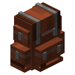
I–III — на верстакеВещмешок, походный и интендантский ранцы крафтятся всеми:
вещмешок из кожи и сундука, дальше он улучшается медью и железом.
Покупать их не нужно.
IV–VI — только в лавкеРецептов штабного, инженерного и экспедиционного на сервере нет.
Из сундуков подземелий ранцы не выпадают, а мобы носят ранцы
не дороже интендантского.
Модули — самиМодули не продаются: их собирают на верстаке за железо, золото
и редстоун — к любому ранцу, хоть к вещмешку. Чужой ранец
на сервере не открыть.
I
Вещмешок
Первый ранец: карман под инструмент, еду и добычу за вылазку.
27ячеек
1модуль
в крафте
на верстаке
II
Ранец походный
Ровно вдвое больше первого — на дальний выход и стройку.
45ячеек
1модуль
в крафте
на верстаке
III
Ранец интендантский
Второй модуль: подбор и фильтр начинают работать вместе.
54ячейки
2модуля
в крафте
на верстаке
IV
Ранец штабной
Три модуля и восемь десятков ячеек: рабочий ранец инженера страны.
81ячейка
3модуля
319 ₽
V
Ранец инженерный
Пять модулей — можно держать печь, бак и верстак одновременно.
108ячеек
5модулей
429 ₽
VI
Ранец экспедиционный
Потолок мода: семь модулей. Больше ярусов в игре просто нет.
120ячеек
7модулей
549 ₽
Купленный ранец приходит почтой — забрать его
в игре командой /mail. Ранец выдаётся новым и пустым:
вещи и модули из старого переложи сами. Больше трёх ранцев мод
на игроке не держит. Именной ранец, который не теряется при смерти, —
позже.
Крафтится всеми
Что можно собрать
У каждого модуля свой рецепт на верстаке, покупать ничего не нужно,
и ставится он в любой ранец — хоть в вещмешок. У большинства есть
усиленная версия: тот же смысл, больше ячеек фильтра и шире охват.
Основа модулязаготовка, с неё начинается любой другой
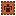
Подбор и фильтрдобыча падает сразу в ранец; фильтр решает, что брать, а что оставить
Магниттянет предметы к себе — но всего на один блок, дальше придётся подойти
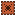
Уничтожение лишнегобулыжник и земля не забивают ранец на карьере
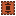
Сжатиедевять слитков сами становятся блоком
Разгрузка и пополнениесгружает добычу в свои сундуки и добирает из них расходники
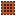
Верстак, наковальня, ковка, камнерезчетыре станка в кармане — стройка не гоняет домой за каждой ступенькой
Печь, домна и коптильняобычной скорости, включая самоплавку; быстрее печи на базе не станет
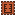
Бак, насос и опытвода, нефть и лава в ранце; насос переливает из фляг в баке, отдельный модуль качает опыт
Батареяпитание для модулей, которым нужен ток
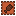
Быткормёжка, смена инструмента, зелья, музыка — всё, что не решает на фронте
Стопка ×1.5 и ×2ячейка держит больше обычного — и в ранце не больше одного такого модуля
На сервере выключено
Чего не будет
Эти модули в моде есть, но на AEGIS их рецептов нет ни у кого —
ни за деньги, ни за игру. Каждый вычеркнут не «на всякий случай»,
а по конкретной причине.
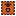
Пополнение в рукесам докладывает патроны и блоки прямо в руку. Бой должен упираться в то, сколько ты унёс, а не в размер ранца
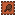
Ловец мобовжитель или стадо в кармане ломают торговлю и расселение городов, а усиленный ещё и завозит враждебных мобов на чужую базу
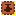
Усиленный насоскачает жидкость прямо из мира: ходячая нефтевышка мимо всей нефтяной механики. Обычный насос остаётся
Ранец в ранцевложенные ранцы умножают объём и стабильно роняют сервер на дюпах
Неуничтожимостьранец, который не горит в лаве и не тонет в бездне, превращается в вечный сейф, который нельзя отбить в бою
Стопки ×4 и вышевплоть до тридцати трёх миллионов в ячейке. Это склад в кармане: поезда Create, ленты и наша складская система после такого не нужны никому
Честно о том, что это платное: три старших
ранца — вещь на витрине, которую нельзя получить игрой. Ранцы I–III, все модули,
а заодно пушки, снаряды и складская система нашего мода AEGIS крафтятся
на сервере и за деньги не запираются. Старший ранец ничего не решает на фронте
и никого не делает сильнее в бою: это лишние ячейки для переноски.
Поштучно
Предметы и услуги
Из этих кусочков собраны звания — здесь они продаются по отдельности
и дороже. Берут, когда нужна одна конкретная вещь, а звание не нужно.
Срок действия — до конца сезона.
Единственный буст в лавке — и он общий
Ускорение сервера
действует всем, кто в этот момент онлайн
×1.5
60 минут
Чем выше множитель, тем короче окно и тем дороже шаг: ×1.5 — целый час,
×5 — пятнадцать минут «войны на всех парах». Ускоряются переработка и производство
у всех онлайн; в чате объявляется, кто оплатил. Личных бустов добычи в лавке
нет: на сервере, где воюют за нефть и сталь, купленный множитель производства —
это купленная война.
259 ₽
Точка дома
+1 слот, всего не больше 4
149 ₽
Свой префикс
в чате и TAB · позже
39 ₽
Цветной ник
в чате и TAB · позже
29 ₽
Значок у ника
пиксельный · позже
35 ₽
Своё сообщение при входе
видит весь сервер
65 ₽
Когда ты заходишь, весь сервер видит в чате «Ник: твой текст» —
до 60 знаков, не чаще раза в 10 минут. Текст меняется командой /приветствие.
Личный позывной
сигнал всему серверу, когда заходишь
49 ₽
Приоритетный вход
когда сервер полон
49 ₽
Возврат к точке смерти
/back · вне боя, задержка 30 с
45 ₽
Полёт /fly
летать в своём городе
250 ₽
Скин-накидка
поверх скина · позже
85 ₽
Салютный залп /салют
по команде, раз в 10 минут
35 ₽
Залп запускается тогда, когда он к месту — на параде, после победы,
на открытии стройки. При входе на сервер не срабатывает: там это шум.
Кто заходит, когда сервер полон
да«Гвардеец» и старше или купленный «Приоритетный вход»одна и та же отметка: звание и товар вместе не складываются
нетВсе остальные, включая «Знаменосца»ждут, пока освободится слот
Отметка привязана к званию или покупке, а не к активности:
пропустил пару дней — она на месте.
Чего в лавке нет — и не появится
Личных бустов добычи и производства. Только общий буст, который получают все.
Оружия и брони сильнее обычной. Кит «Штурмовик» даёт ровно то, что игрок
делает сам у верстака: обычные меч, лук, щит, доспех, зелья и обычные зачарования.
Ничего кастомного, ничего с уникальными свойствами.
Защиты привата, отмены войны, отката потерь. Проигрыш нельзя выкупить.
Креатива, спавна предметов, чужих координат и приватной информации.
Выкупа тяжёлых наказаний. Амнистия снимает только меру до суток;
читы, гриферство, дюп, символика и слив не выкупаются никогда.
Обхода гринда. Кроме косметики, в лавке нет ничего, чего нельзя скрафтить.
Наказания
Апелляция и амнистия
Разбор несправедливой меры бесплатный и идёт первым. Деньгами
выкупается только лёгкий срок — мера до суток включительно, не больше двух раз
за сезон и никогда за то, чем испортили игру другим.
Сначала бесплатно
Апелляция не стоит ничего
Считаешь меру несправедливой — тикет «Апелляции»
на сайте или /кейс в игре, по одному разбору в сутки. Модератор обязан
назвать пункт правил: номера нет — мера снимается сама, и разбирается уже
его звено. Признал вину — в письме о наказании есть кнопка «просить смягчение»:
срок режут вдвое, в полтора раза или снимают совсем.
Ошиблась модерация — возвращение бесплатное. Если амнистия
к тому времени уже оплачена, деньги возвращаются целиком, тем же способом.
Блокировка входа на 30 минут, на 3 часа или на сутки снимается, и игрок заходит
сразу. Столько стоит обычная бытовая ссора: пришёл на чужое после просьбы,
поставил соседу стену-заслон, начал войну без регистрации, собрал лаг-машину.
блокировка на трое суток, на 14 суток и навсегда не снимается ни за какие
деньги
Вторая амнистия в том же сезоне стоит вдвое: мут — 120 ₽,
возвращение — 300 ₽. Третьей нет, срок отсиживается. Счётчик обнуляется
вайпом вместе со всем остальным.
Оформляется в кабинете, в разделе «Наказания»: у действующей
меры появляется кнопка. В игре её нет нарочно — заблокированный в игру не зайдёт,
а кабинет открывается и после бана.
Что не выкупается никогда
Читы, x-ray, макросы и стороннее ПО (п. 3) — блокировка навсегда,
и разговора о деньгах там нет.
Гриферство и разрушение чужого вне войны (п. 2) — сначала восстановление
за свой счёт, срок отсиживается.
Дюп и выгода с бага (п. 3) — задублированное изымается; сообщил о баге
сам — меры и не будет.
Мультиаккаунт и обход наказания со второго аккаунта (п. 3) — срок
начинается заново и удваивается.
Запрещённая символика и прославление нацизма (п. 6) — по призывам
к насилию не принимается даже апелляция.
Крупный обман и продажа игрового за реальные деньги (п. 4).
Слив неопубликованного за пределы проекта (п. 9).
Мера, вынесенная руководством лично (п. 8) — по правилам она
окончательная.
Наказания в Discord — там свои правила и свои сроки, снимаются только
апелляцией.
Амнистия гасит срок, а не факт. Запись остаётся
в истории наказаний навсегда и видна модерации: ступень лестницы не сбрасывается,
и то же нарушение во второй раз берётся как повтор — а повтор почти всегда уже
не выкупается. Возмещение амнистия тоже не отменяет: сломанное восстанавливается,
вынесенное возвращается, задублированное изымается. Купить её можно только себе
и только после того, как апелляцию рассмотрели и мера устояла: пока разбор идёт,
кнопка не работает — бесплатный путь всегда первый.
Выгоднее вместе
Комбо со скидкой
Готовые связки под стадию игры. Внутри — те же позиции лавки,
просто дешевле, чем по отдельности. Промокод и скидка премиума считаются
сверху, поверх этой выгоды.
Первый эшелон −30%
Стартовый вагон новобранца: звание, еда на первые дни, инженерный инструмент
и пара кейсов, чтобы сразу встать к станку.
«Знаменосец» на весь вайп + кит «Снабжение» I + кит «Инженер» I
+ кейс «Полевой склад» ×2
355 ₽
249 ₽
Военный заём −24%
Платишь один раз — получаешь месяц мандата, три кейса на производство
и нефть и снаряжение бойца.
«Мандат Ставки» 30 дней + кейс «Заводской наряд» ×2
+ кейс «Нефтяной контракт» + кит «Штурмовик» II
615 ₽
469 ₽
Генеральный план −29%
Для тех, кто пришёл строить державу всерьёз: звание командора,
артиллерийский комплект и кейс генштаба.
«Командор» на весь вайп + кит «Артиллерист» II
+ кейс «Генштаб»
678 ₽
479 ₽
Держава −29%
Всё сразу и на весь вайп: «Маршал» с полётом над городом и резервом
раз в четверо суток, три месяца мандата и три кейса генштаба.
«Маршал» на весь вайп + мандат ×3 месяца
+ кейс «Генштаб» ×3
1813 ₽
1290 ₽
Главное правило
Без единого рубля
Червонцы работают внутри сервера: ими берут провинцию,
платят суточный налог и торгуют между державами. Докупить их можно, но ни одна
позиция лавки в них не стоит — а всё, что решает на фронте, и так добывается
руками. Вот сколько даёт одна игра, без единого рубля.
90–130 Ч
Скупщик · за вечер
Главный источник, и к нему приходят первым: добытое сдаётся скупщику на спавне.
Час-другой в день — 30–50 Ч, вечер живой игры — 90–130. Дальше заработок гаснет
нарочно: свыше ~250 Ч в сутки из игрока уже почти ничего не выходит, так что
ферма на всю ночь бессмысленна, а вернувшийся после перерыва не отстаёт навсегда.
1080 Ч
Боевой пропуск
360 Ч за круг — 25 Ч на шести этапах, 60 на 35-м и 150 на последнем; три
круга за сезон. Достаточно, если играть без надрыва: четыре задания в день.
150–600 Ч
Ивенты и турниры
Раз в две недели: 50–300 Ч за призовое место, участие тоже оплачивается.
~200 Ч
Ежедневный вход
5 Ч в день, седьмой день подряд — втрое. За сезон набегает кейс с запасом.
100 Ч
Приглашённый друг
За каждого, кто дошёл до 10 этапа пропуска. Ограничений по числу нет.
100–500 Ч
Творчество для проекта
Арт, ролик, гайд, карта, разбор боя в каналах проекта — по решению овнера.
5–380 Ч
Продажа призов
Ненужный приз из кейса продаётся обратно в игре: от 5 червонцев за обычный
до 380 за легендарное.
Сверх обычной игры, за сезон
1400–1900 червонцев
Столько приносят одни только награды — сверх того, что даёт скупщик.
Провинция у игрока одна, и на неё этого хватает с запасом: свободная стоит
от 10 Ч, самая дорогая земля мира — 600 Ч, суточный налог — от 1 до 36 Ч. Сверху идёт бесплатная линия пропуска: киты, косметика, кейс
«Штабные очки» и ресурсы вагонами, все шестьдесят этапов без единого пустого.
≈1650 Ч
Оформление
Как купить
01
Выбери позицию
Нажми «Купить» у нужной карточки. В окне заказа впиши игровой ник,
точно как в игре, и промокод, если он есть.
02
Оплати
Откроется платёжная страница: карта или СБП, скидка кода и −5% премиума уже
посчитаны. Карта Казахстана, Беларуси, Узбекистана и других стран СНГ платит
в своей валюте — банк пересчитает сам. Карты Украины и Азербайджана касса
не принимает: в окне заказа будет ссылка «оплатить за меня» — отправь
её тому, у кого карта проходит, а покупка придёт тебе.
03
Забери товар
Покупка ложится на почту сервера: в игре придёт письмо, забрать —
/mail. Ещё не заходил на сервер — письмо дождётся первого входа. После «забрать» звания
включаются сразу, мандат — без письма, киты ложатся в /посылки,
кейсы крутятся в /кейсы.
04
Сверь чек
Привязан Discord — бот пришлёт чек в личку: номер заказа, что куплено и где
забрать. /донат в игре показывает твои звания и до какого числа они действуют.
Что-то не так — обращение с номером заказа.
Мои чеки
Заказы из этого браузера. Список лежит у тебя и никуда не уходит.
Ошибся ником или оплатил не ту позицию — скопируй чек и приложи
к обращению: по номеру заказа платёж находится сразу,
выдачу поправим. Отдельный чек о списании присылает платёжная служба — на почту
или в приложение банка.
Важно: донат — добровольная поддержка проекта, а не покупка услуг; возврат
не предусмотрен. Цена везде указана в рублях, вторая строка под ней — справочный
пересчёт по курсу ЦБ РФ на указанный день; платёж всё равно проходит в рублях
и банк считает по своему курсу. Золотой червонец — внутренняя условная единица
сервера без самостоятельной денежной стоимости; пакет червонцев — такая же
добровольная поддержка проекта, как и остальные позиции. Обратно на деньги червонец
не меняется, вывод и перепродажа за реальные деньги на стороне запрещены правилами,
ценником у товара червонец не бывает; продажа приза из кейса возвращает червонцы,
а не деньги.
Составы наборов, шансы и цены могут уточняться до открытия сезона; лавка в игре
включается вместе с сезоном. Всё содержимое выдаётся из обычных предметов сборки
и не даёт преимущества, недоступного остальным.
AEGIS SMP не связан с Mojang Studios и Microsoft.
Тематический кит
—
—
по отдельности — · выгода —
— ₽
Брать можно сколько угодно раз. Приходит письмом на /mail,
открывается в /посылки — нужны свободные ячейки.
Кейс
—
—
—
Сколько кейсов
Анимация
Крутится только в игре: купленный кейс приходит
письмом, открыть его — /кейсы. Здесь — что внутри и с каким шансом.
Что внутри и с каким шансом
—
—
Заказ
—
—
Покупка придёт на аккаунт—
Войди тем же ником и паролем, что в лаунчере, — заказ привяжется к твоему аккаунту, и ник набирать не придётся. Если к аккаунту привязан Discord, бот пришлёт чек в личку. Пароль проверяет сервер AEGIS по защищённому соединению, сайт его не запоминает.
 Мотор, валы и шестерни на 256 SU
Мотор, валы и шестерни на 256 SU